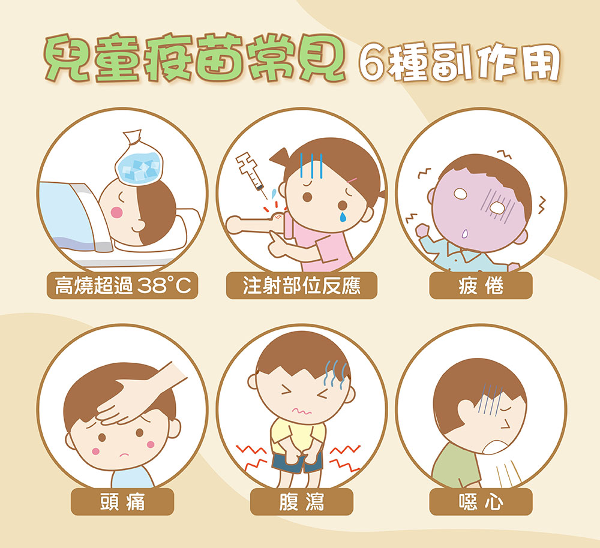

二、寶寶接種注意事項
對抗傳染病最有效的方式，就是依照衛福部時程施打疫苗！
1. 要準備的東西
◾ 寶寶的健保卡
◾ 兒童健康手冊
◾ 戶口名簿正本（第一次赴該單位接種的話）
◾ 醫生開立的特殊疾病證明
2. 寶寶接種流程
1. 諮詢預約：向醫療機構或醫生資訊疫苗接種信息並預約接種。
2. 登記資料：接種當天家長需填寫相關健康表格及同意書。
3. 健康評估：接種前醫護人員對北鼻進行健康評估，確保身體狀況適合施打。
4. 疫苗接種：通常施打在上臂肌肉或大腿肌肉。
5. 後續觀察：接種後需在原地，等待一段時間觀察有無嚴重副作用。
6. 接種紀錄：完成接種後家長會收到一份接種紀錄。
3. 接種後副作用
◾ 高燒超過 38°C
◾ 注射部位紅腫、疼痛或硬結
◾ 疲倦
◾ 頭痛
◾ 腹瀉
◾ 噁心

圖片來源：www.carloine.com.tw